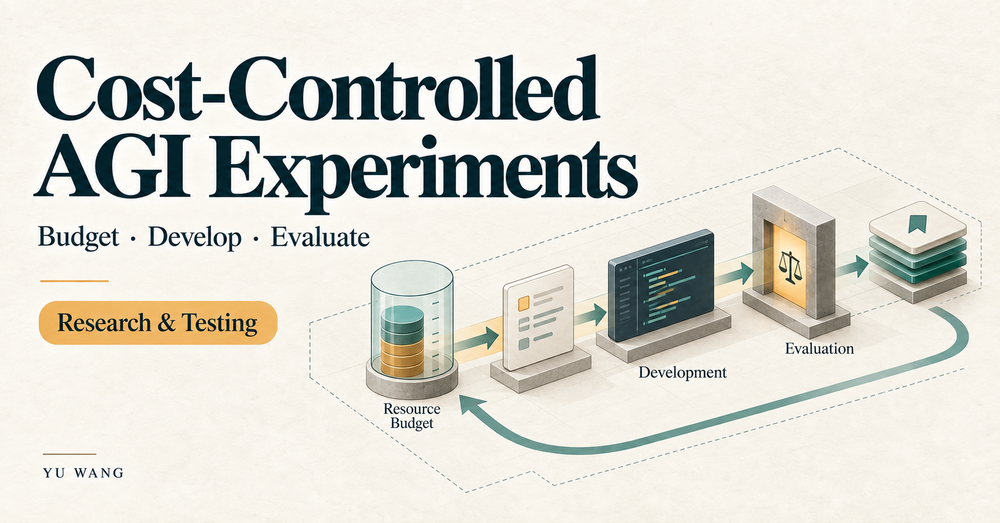

03 / Research & experimentation
Cost-Controlled AGI Development Experiments
Researching how autonomous software development can stay within resource limits, preserve continuity and produce work that can be independently checked.

The research question
How can an AI development process choose bounded work, account for its resources, recover after interruption and verify a candidate before it proceeds?
AGI names the research direction of this project. The present work is an experimental software-development platform; it has not achieved AGI. It is also separate from the deployment methods used for protected enterprise application environments.
Cost and available AI capacity
The experiments treat time, cash, attention and AI subscription capacity as constraints on task selection and implementation. I use “Fuel” to describe that available AI capacity, including quota windows, reset timing and estimated reservations.
An interrupted call can leave usage uncertain. The experimental accounting preserves that uncertainty instead of treating it as unused capacity. Reservations are planning estimates rather than guarantees from a model provider.
What I have implemented
- Python/SQLite task leases and explicit work boundaries.
- Workspace checkpoints and recovery after interrupted work.
- Subscription-capacity monitoring and conservative accounting for uncertain usage.
- Candidate-verification controls tied to immutable Git snapshots.
- An interface for running candidate acceptance independently of the developing agent.
Learning from a candidate
The task definition, implementation evidence and acceptance result are kept distinct. A change that passes an isolated check still needs the appropriate host and operating context before it can be considered ready for unattended work.
This approach makes failure useful for the next decision: whether to revise the task, change the implementation, investigate an environment issue or stop the affected path.
Current stage
Offline checks completed for a candidate; experimentation continues
A frozen candidate completed offline regression and reproducibility checks. Host qualification and unattended operation remain unverified. There is no claim of achieved AGI, continuous autonomous earnings or a measured cost-reduction result.